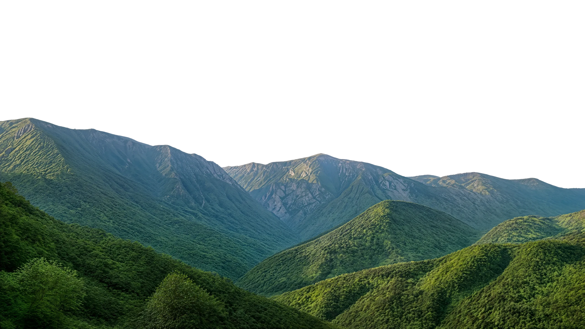
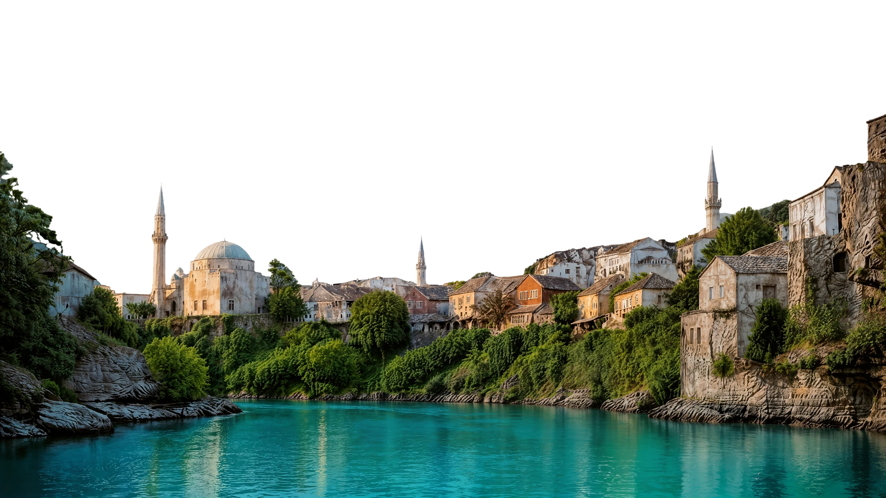
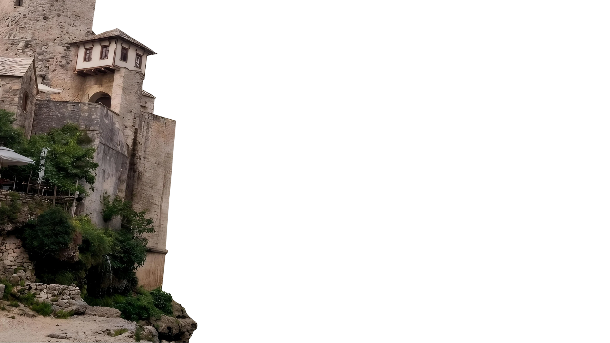
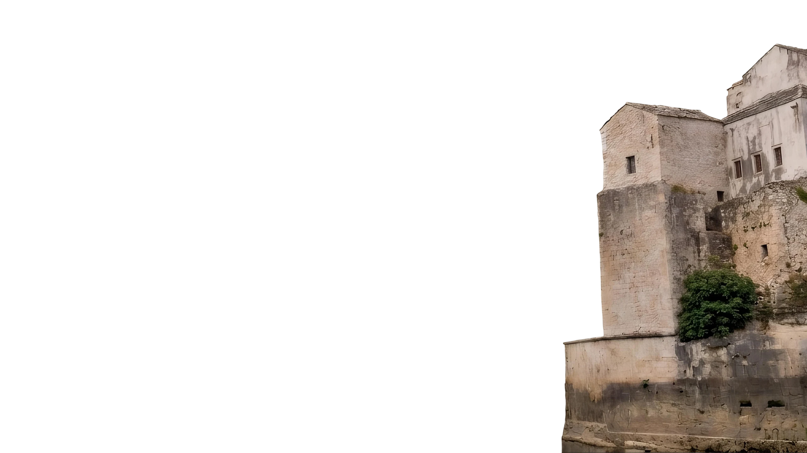
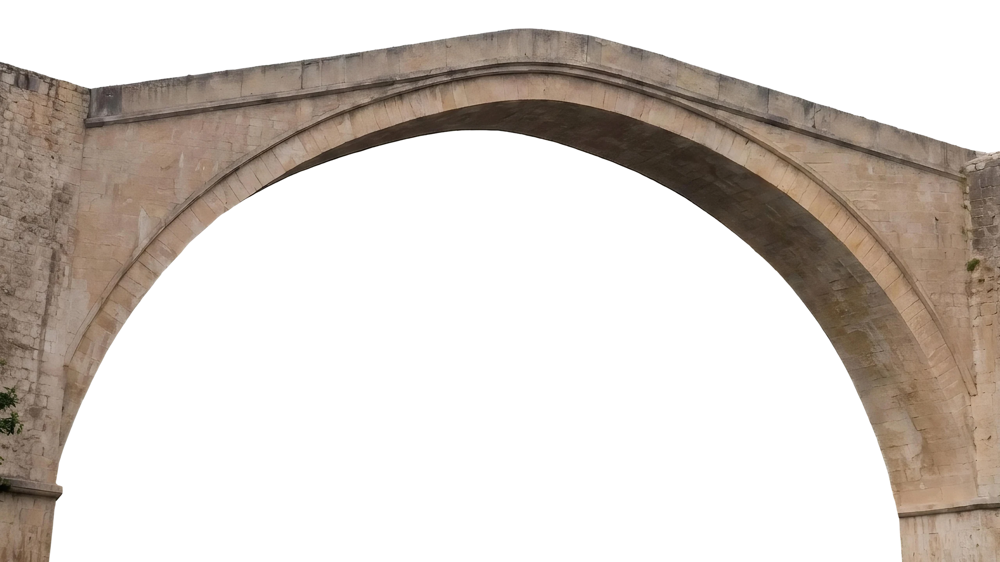
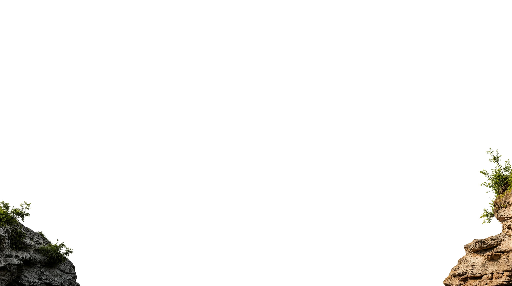
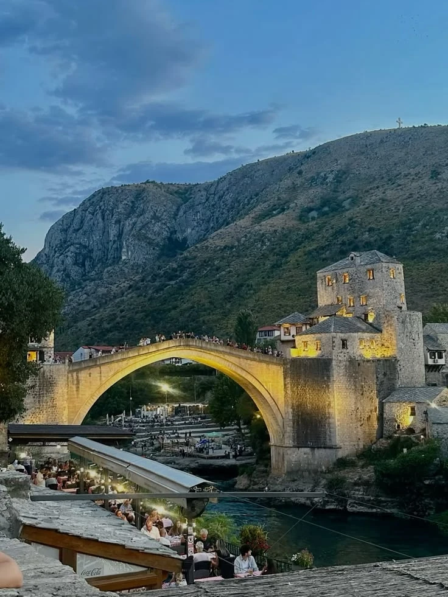

Stari Most
The stone arch over the Neretva and Mostar's main landmark.






A stone arch, emerald water, and a compact old city made for slow mornings, late light, and one unforgettable crossing.
Stari Most links the banks of the Neretva and anchors a historic quarter shaped by Ottoman, Mediterranean, and European layers.
Stone lanes, mosque courtyards, copper stalls, and riverside coffee stay within a short walk of Stari Most.
CHAPTER 05 / A CLOSER LOOK
01 / THE CROSSING
1566 · Rebuilt 2004
Designed by Hayruddin, the Old Bridge joined the banks of the Neretva in 1566. Destroyed in 1993 and rebuilt in 2004, its pale stone arch is a powerful symbol of renewal.
UNESCO ↗
Real photographs of Mostar. Images have been resized and converted to WebP; display crops vary by screen. Adapted Commons photographs retain their respective Creative Commons licences.
Three additional photographs were supplied for this project. The bazaar image retains its @theatlasstory watermark. Historical references are linked beside each place. The Halebija image shows the tower exterior, not a museum interior.